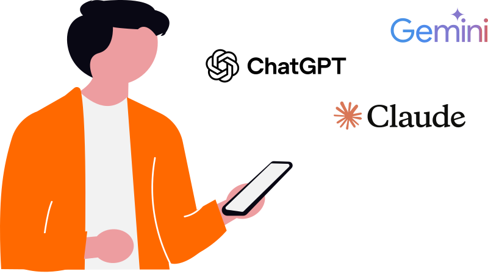
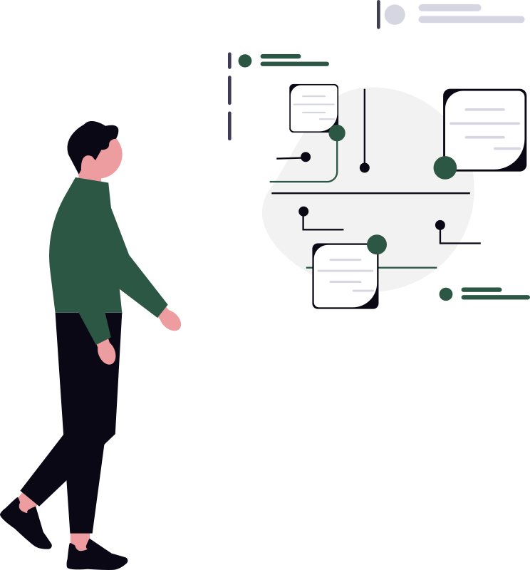

This week in AI felt less like news and more like a spy thriller. Anonymous trillion-parameter models appearing overnight, leaked internal documents exposing next-gen capabilities, and enough new releases to make your head spin. Here's what actually matters for CNY businesses.
1. Hunter Alpha: The Ghost in the Machine
On March 11, a model called Hunter Alpha appeared on OpenRouter with zero announcement. No press release, no company name, no explanation. Just specs that made people do a double-take:
- 1 trillion parameters
- 1 million token context window
- Built for agentic use
The mystery: Nobody knew who built it. Speculation ranged from DeepSeek V4 in disguise to Xiaomi's mimo-v2 leaking early. Two weeks later, the identity was confirmed: Xiaomi's mimo-v2, a Chinese AI model being tested on OpenRouter before official launch.
Why it matters: This is the new playbook. Companies are launching massive models on neutral API platforms before announcing them publicly. It's a way to test performance, gather real-world feedback, and benchmark against competitors without the hype cycle.
Business takeaway: OpenRouter and similar aggregators (Together AI, Replicate) are becoming the testing grounds for frontier models. If you're building AI-powered products, you're getting access to billion/trillion-parameter models weeks or months before official launches.

2. Anthropic's "Mythos" Leak: The Step Change Nobody Was Supposed to See
On March 26, Fortune broke the news of Anthropic's next frontier model after a data leak exposed internal planning documents. The model, codenamed Claude Mythos, represents what Anthropic internally calls a "step change in capabilities."
What leaked:
- Mythos is bigger and more capable than Opus 4 (current flagship)
- Internal documents describe it as posing "unprecedented cybersecurity risks"
- A new tier called "Capybara" may be introduced above Opus
- Release timeline unclear, but testing is underway
Why it matters: Anthropic doesn't use the phrase "step change" lightly. This suggests Mythos isn't just "Opus but better," it's a fundamentally different capability class. The cybersecurity warning is the real signal: if Anthropic (the safety-first AI lab) is internally flagging risks, they're taking this seriously.
Business takeaway: When Mythos ships (likely Q2 2026), expect new capabilities that weren't possible with Opus 4. Plan for it now: what would you build if your AI could handle tasks that currently require multiple specialists?
3. The March Launch Wave: GPT-5.4, Gemini 3.1, Grok 4.20
March saw a model release cadence that would have been unthinkable a year ago:
- GPT-5.4 (March 5): OpenAI's latest, now on OpenRouter with $2.50/1M input tokens
- Gemini 3.1 Pro (late February, but hitting production in March): Google's answer to GPT-5
- Grok 4.20 (March 22): xAI's latest from Elon Musk's team
- Claude Sonnet 4.6 (February 17, widespread adoption in March)
NVIDIA GTC (March 10-14) reframed the enterprise conversation entirely around agentic AI, multi-agent systems that collaborate like teams, not single models answering questions.
Why it matters: We're past the "which model is best?" phase. The frontier models (GPT-5.4, Claude Opus 4.6, Gemini 3.1) are converging in capability. The differentiation now is orchestration: how you combine models, how you route tasks, how you design workflows.
Business takeaway: Stop picking a single vendor. The winning strategy for 2026 is multi-model orchestration: use GPT-5.4 for reasoning, Claude for writing, Gemini for multimodal, and route tasks dynamically. OpenRouter makes this trivial.
4. The Agentic AI Inflection Point
Google Research published a paper this week ("Agentic AI and the Next Intelligence Explosion") that validates what we've been teaching CNY businesses:
Key finding: AI models don't improve by "thinking longer." They improve by simulating internal debates, a "society of thought" where distinct perspectives argue, verify, and reconcile.
Translation: The future isn't one powerful AI. It's many specialized AIs working together, coordinated by humans.
This is why 95% of AI pilots fail (MIT study): companies treat AI as a monolithic tool instead of designing workflows where multiple AI agents handle different parts of the process.
Business takeaway: If you're still thinking "let's add ChatGPT to our workflow," you're already behind. The question is: how do we rebuild this process so AI handles the full task set?
5. Sora API Discontinued
OpenAI announced the discontinuation of Sora's API this week. The text-to-video model that made headlines in 2024 is being pulled back while OpenAI rethinks its video strategy.
Why it matters: This is a reminder that not every AI capability becomes a product. Sora was impressive in demos, but the use cases didn't justify the compute cost for most businesses.
Business takeaway: Don't build mission-critical workflows on bleeding-edge AI features until they're productized and priced for scale. Sora was cool, but it wasn't ready.

What This Week Means for CNY Businesses
1. The model race is over. The orchestration race has begun.
You don't need to pick "the best" model anymore. You need to design workflows that route tasks to the right model for the job.
2. Frontier models are getting really good at agentic work.
Hunter Alpha, Mythos, GPT-5.4, these aren't just better chatbots. They're built for multi-step reasoning, tool use, and collaboration. If your AI pilot is still "answer customer questions," you're missing the point.
3. The winning strategy is human-AI ensembles, not AI replacement.
Google's research confirms it: intelligence is social. The businesses that win are the ones that design workflows where humans and AI do what they're each uniquely good at.
One Question to Ask Yourself
If you had access to an AI that could handle 10-step workflows autonomously (research → draft → revise → QA → deliver), what process would you redesign first?
That's the question separating the 95% (still treating AI as a productivity tool) from the 5% (redesigning workflows for AI-driven growth).